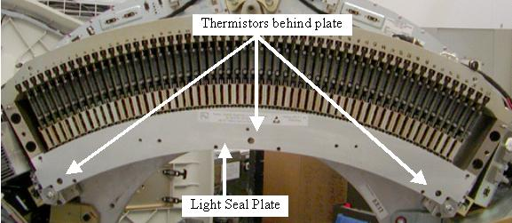
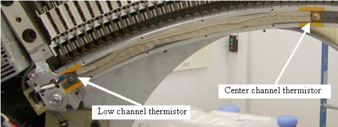

Operating Documentation
Direction 5307452-8EN, Rev# 4
Discovery CT750 HD Service Methods - Adv
Operating Documentation |
| Required Persons | Preliminary Reqs | Procedure | Finalization |
|---|---|---|---|
| 1 | 0.5 hour | 1 hour | 1 hour |
This procedure describes how to replace the Detector Thermistors.
| Last Revised on: | June 20, 2008 |
| Item | Qty | Effectivity | Part# | Manufacturer | |
|---|---|---|---|---|---|
| Standard tool kit | AR | - | - | - | |
| Item | Qty | Effectivity | Part# | Manufacturer |
|---|---|---|---|---|
| Ty-wraps | AR | - | - | - |
| Item | Qty | Effectivity | Part# | Manufacturer | |
|---|---|---|---|---|---|
| Detector Thermistors | 1 set | - | - | - | |
| CRUSH HAZARD. | |
| UNEXPECTED GANTRY ROTATION CAN CAUSE SERIOUS INJURY. | |
| Never service the gantry with the axial drive enabled. Use the gantry rotation lock to lock out gantry rotation. See safety menu of Service Document gui for appropriate procedures. |
| Condition | Reference | Eff |
|---|---|---|
Static strap and monitor must be used when working inside the detector. | - | - |
Remove gantry right side cover.
Refer to Replacement → Gantry → Enclosure → (Cover Removal Procedures).
Turn OFF the Axial Drive and HVDC switches on the gantry’s Service Switch Panel.
Position the DAS/Detector at the 12 o'clock position and lock the gantry rotational lock.
Turn OFF gantry power using the 120 VAC service switch on the service switch panel.
Remove the top covers, left side cover and front gantry cover.
Remove the Detector Air Plenum as shown in Detector Air Plenum Removal/Installation.
Remove the screws for the Detector light seal plate using the torx T20 bit supplied with the system. See Illustration 1.
Make sure a static strap is in use when working near the detector.
Keep hands off the detector modules when the lightseal plate is removed. The lightseal chamber must be kept clean.
Illustration 1: Light Seal Plate

Unplug the thermistors from the routing boards on each end of the detector. See Illustration 2 and Illustration 3.
Illustration 2: Low and Center channel thermistors

Illustration 3: High channel thermistor

For the center thermistor, if this is the first time this thermistor is being replaced do not remove the tape over the wires. Doing this may peel off the light seal foam. Clip the plug from the wire and pull the wire out from under the tape or use a sharp knife to cut the tape along the wire. If there is already a second layer of tape over top of the original tape then remove top layer of tape holding the wire to light seal foam.
Unscrew the thermistors from the detector rail.
Screw in the new thermistors until snug. Do NOT overtighten.
Plug the thermistors into the routing boards routing the wires as seen in Illustration 2 and Illustration 3.
Tape the wire from the center thermistor in place over the original tape using the supplied tape.
Perform a visual inspection of the light seal plate to make sure no hair or debris is on the inside surface. Need to keep all debris out of the detector.
Install the light seal cover being careful around thermistor wires. Torque to the values shown in Table 1.
Table 1: Light seal plate screws
| 2.5 N-m | 1.8 lb-ft | 22 lb-in | 25.5 Kg-cm |
Install the Detector Air Plenum as shown in Detector Air Plenum Removal/Installation.
Perform a visual inspection of the air plenum cabling to ensure gantry is ready for rotation.
Release the gantry rotation lock.
Install the gantry front, top and left side covers.
Refer to Replacement → Gantry → Enclosure → (Cover Removal Procedures).
Enable 120 VAC HVDC and Axial Drive service switches from the service switch panel. Press the table drives enable button on the lower right corner of the service switch panel.
Install the gantry right side cover.
Allow the detector to warm up while monitoring the detector temps to make sure all 3 zones are coming up to temperature. The detector may take up to 45 minutes to come up to temperature. Check Detector temps to make sure the detector warms up to 38 degrees C and stays there. Detector warm up may take up to 45 minutes.
Perform a Fastcal.
Perform the [Quality Assurance Test] from the [Functional Checks] menu of the service manual to ensure system operation.